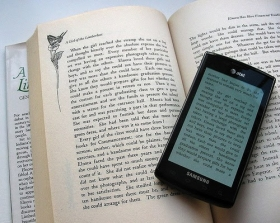

Float images side by side



Note that we also use the clearfix hack to take care of the layout flow, and that we add the box-sizing property to make sure that the image container doesn´t break due to extra padding. Try to remove this code to see the effect